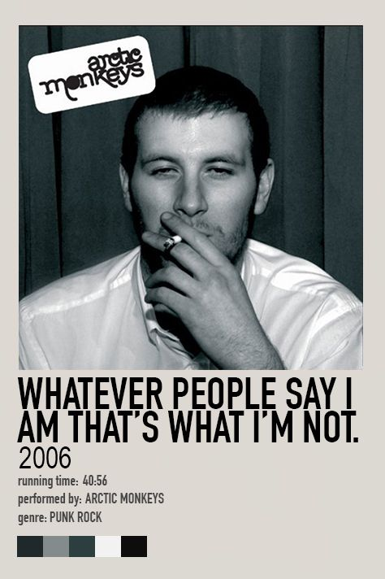
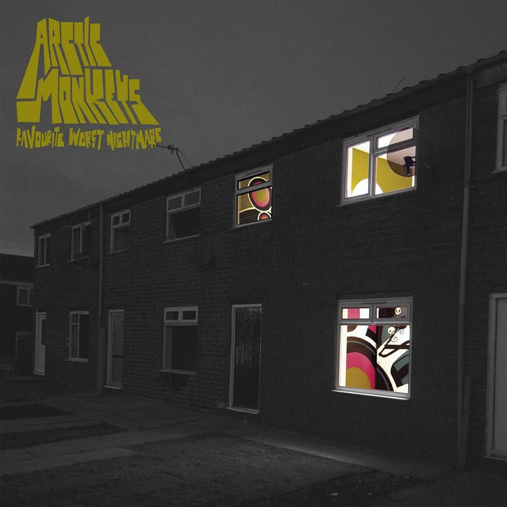

| Puntos Importantes Que Los Impulsaron En Su Trayectoria: |
- 1.-Éxito Temprano y Popularidad en Línea: Arctic Monkeys ganaron popularidad rápidamente gracias a la distribución de sus demos en línea y el boca a boca. Su primer álbum, Whatever People Say I Am, That's What I'm Not (2006), fue un éxito rotundo y se convirtió en el álbum debut más vendido en la historia del Reino Unido en ese momento.
- 2.-Estilo Musical Evolutivo: La banda ha experimentado con su sonido a lo largo de los años. Mientras que sus primeros trabajos se caracterizaban por un estilo de rock indie crudo y directo, en álbumes posteriores como AM (2013) y Tranquility Base Hotel & Casino (2018), han incorporado elementos de hip hop, R&B y música electrónica, mostrando una evolución en su estilo musical.
- 3.-Letras Agudas y Observadoras: Las letras de Alex Turner, el vocalista principal y compositor de la banda, son conocidas por su agudeza y observación social.
 |
|
| Innovaciones en la Composición y Estilo Musical: |
- 1.-Fusión de Géneros Musicales: La banda combina elementos de varios géneros musicales, incluyendo rock, garage, punk y post-punk revival, creando un sonido fresco y distintivo. En su segundo álbum, "Favourite Worst Nightmare" (2007), mantuvieron el sonido crudo y energético del debut pero añadieron capas de sofisticación y complejidad.
- 2.-Evolución Musical y Experimentación: A lo largo de su carrera, Arctic Monkeys han mostrado una notable evolución musical. Por ejemplo, en su álbum "AM" (2013), incorporaron influencias del hip-hop y del R&B en su sonido, experimentando con ritmos más oscuros y una producción más pulida.
- 3.-Producción y Colaboraciones con Productores Innovadores: La colaboración de Arctic Monkeys con productores innovadores ha sido crucial para el desarrollo de su sonido. En sus primeros álbumes, trabajaron con el productor Jim Abbiss, conocido por su trabajo en el álbum debut de Adele. Abbiss ayudó a capturar la energía cruda y el estilo característico de la banda.
|
|
| Impacto Cultural y Social de Arctic Monkeys |
- Influencia en la Moda y el Estilo Juvenil: Arctic Monkeys han tenido un impacto notable en la moda y el estilo de sus seguidores, especialmente en el Reino Unido. Su estilo distintivo, que combina una estética casual y rebelde con toques de inspiración retro, ha influido en la moda juvenil desde el lanzamiento de su primer álbum.
- Efecto en la Escena Musical Independiente: Arctic Monkeys desempeñaron un papel fundamental en el renacimiento del rock independiente en los años 2000. Su éxito inicial sin el apoyo de una gran discográfica demostró que las bandas emergentes podían alcanzar el estrellato a través de medios independientes y el uso de plataformas digitales.
- Contribución a la Narrativa Cultural del Norte de Inglaterra: as letras de Arctic Monkeys a menudo reflejan la vida y los desafíos en el norte de Inglaterra, especialmente en Sheffield, su ciudad natal. A través de sus canciones, la banda ha ofrecido una visión auténtica de la cultura y la vida urbana de esta región, abordando temas como el trabajo, la juventud y la vida nocturna.
 |
|